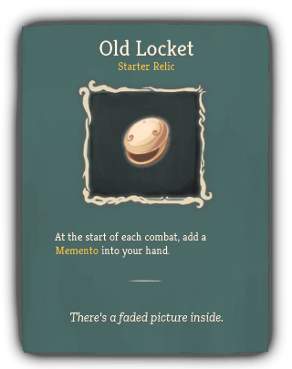
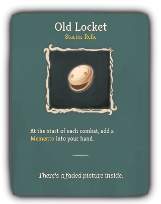
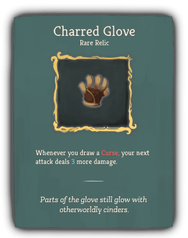
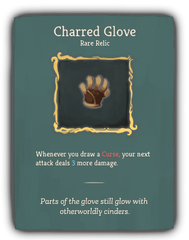
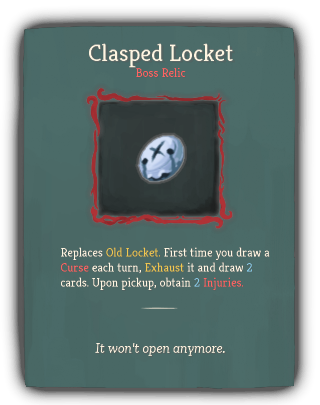
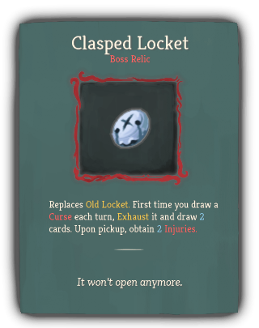

| Name |
Image |
Tier |
Pool |
Description |
Flavor |
| Old Locket |
   |
Starter |
Hermit_yellow |
At the start of each combat, add a Memento into your hand. |
There's a faded picture inside. |
| Rye Stalk |
 |
Common |
Hermit_yellow |
hermit:Bruise is no longer reduced on hit. |
Still in mint condition, despite being chewed on for so long. |
| Spyglass |
 |
Uncommon |
Hermit_yellow |
If you end your turn hermit:Concentrated, gain an additional [E] next turn . |
Property of Kestin Highfin. |
| Charred Glove |
   |
Rare |
Hermit_yellow |
Whenever you draw a Curse, your next attack deals 4 more damage. |
Parts of the glove still glow with otherworldly cinders. |
| Clasped Locket |
   |
Boss |
Hermit_yellow |
Replaces Old Locket. Upon pickup, add 3 Mementos to your deck. |
It won't open anymore. |
| Dented Plate |
 |
Boss |
|
While your HP is at or below 50%, gain [E] and draw 1 card at the start of your turn. |
Several bullets are still lodged inside. |
{kind=link}


{kind=link}
{kind=link}